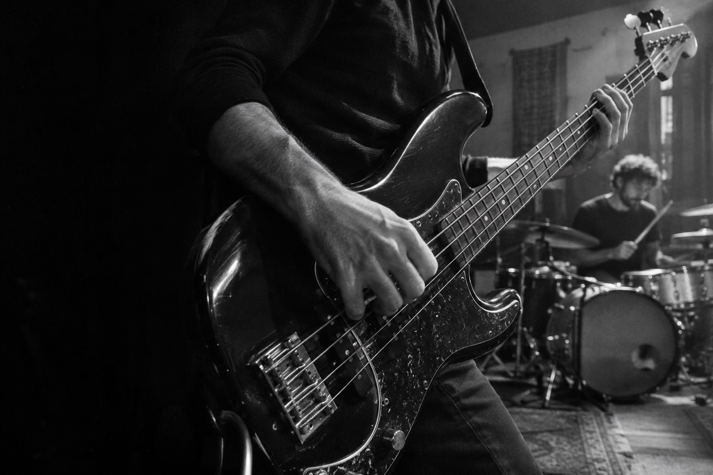

Travailler une partie
Écoute la basse seule pour apprendre sa ligne. Dans Explorer, place A et B autour des deux mesures à travailler, puis joue-les en boucle avec les autres pistes.


Application disponible en français et en anglais
Isole ton instrument, boucle le refrain et répète avec ton enregistrement. BandStudio prépare les pistes, les paroles et les accords sur ton ordinateur.
L’atelier
Ouvre un morceau de ta bibliothèque. Passe des pistes à la structure et à la fiche au fil de ta répétition.
Écoute la basse seule pour apprendre sa ligne. Dans Explorer, place A et B autour des deux mesures à travailler, puis joue-les en boucle avec les autres pistes.
Pendant la lecture, zoome et fais glisser le cadre de la vue d’ensemble jusqu’au prochain refrain. Revenir à la lecture te ramène au passage que tu entends, avec le même zoom.

Cale les paroles et les accords sur les mesures. Emporte ta grille en répétition grâce à l’export PDF.

Guides pratiques
REAPER
Importe le fichier, corrige les repères à l’oreille et ouvre les pistes dans REAPER.
Suivre le guide REAPERChoisis les accords, cale les paroles sur le chant et imprime une fiche par mesures.
Suivre le guide de la ficheInstallation
Pour changer de langue, ouvre Réglages → Langue de l’interface, choisis Français ou English, puis quitte et rouvre BandStudio. Les moteurs d’analyse se préparent sur la machine qui traitera tes morceaux.
Windows 11 · x64 · ZIP
Extrais le ZIP entier dans un dossier où tu peux écrire. Ouvre BandStudio.exe, puis choisis tes moteurs dans Réglages → Analyses locales.
WebView2 et .NET Framework 4.8 requis. Python et FFmpeg inclus.
Télécharger le ZIP WindowsIntel · Apple Silicon
Déjà équipé ? Ouvre Réglages dans BandStudio, vérifie les mises à jour, puis quitte et rouvre l’application après le téléchargement.
Première installation depuis les sources avec un moteur local déjà préparé. Aucun installateur complet pour Mac neuf à ce jour.
Consulter le guide macOSAssistance
Retrouve les musiciens sur Discord ou décris un problème sur GitHub.
Dans Explorer, marque le début et la fin du refrain avec A et B. Choisis Répéter A–B, écoute la jonction, puis crée une variante. Tu retrouveras les deux versions dans ta bibliothèque.
Les analyses traitent ton enregistrement localement. Les recherches de paroles, d’accords et de pochettes utilisent le titre et l’artiste sur Internet.
Oui. Réécoute les passages signalés, déplace un repère, corrige un accord ou recale les paroles dans l’éditeur avant de partager ta fiche.
BandStudio prépare les morceaux. REAPER ouvre le projet audio exporté. Pour les balances et les retours de scène, le projet compagnon est BandPilot.